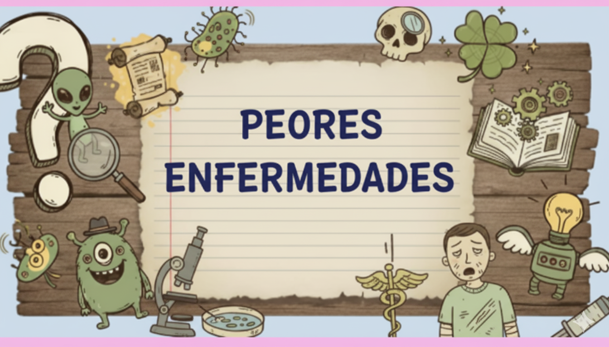
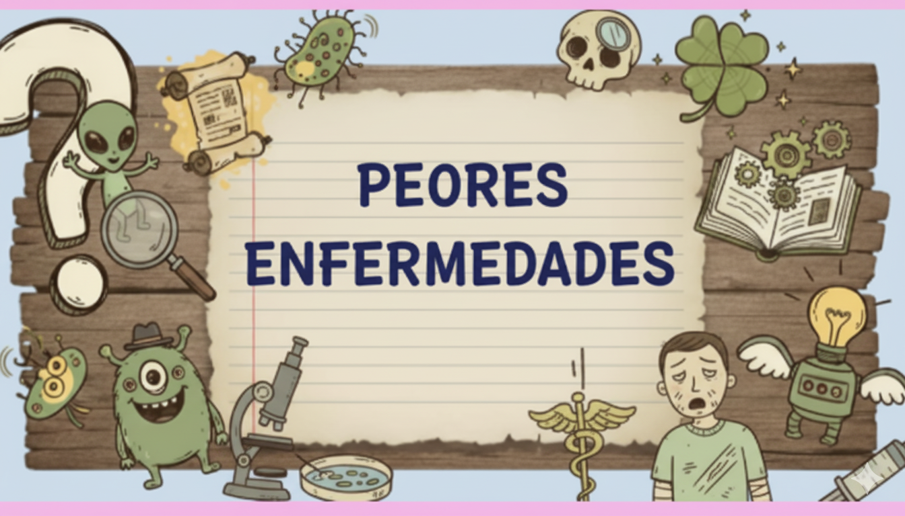

¡Bienvenido a los Top 5 más curiosos!
¿Te apasionan las curiosidades y los hechos sorprendentes?
¡Estás en el lugar correcto!
En esta página encontrarás nuestros especiales “Top 5” sobre temas que te harán abrir los ojos: desde los contrabandos más ingeniosos de la historia, pasando por los peores trabajos que alguien haya tenido que soportar, hasta las enfermedades más raras y las torturas más extremas registradas.